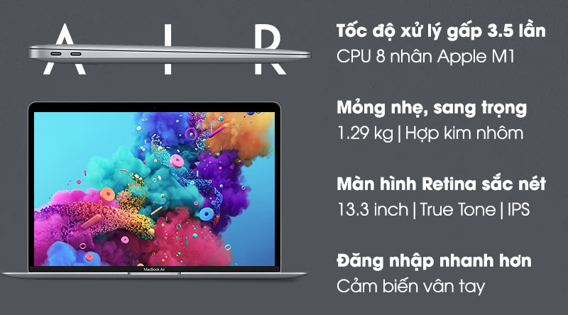

Họ tên: Phạm Đình Nam
Ngày sinh: 18 - 04 - 2001
Giới tính: Nam
Số điện thoại: 0379255712
Email: pnam3300@gmail
Địa chỉ: Đại Thắng - Phú Xuyên - Hà Nội
- Mong được làm việc ở môi trường chuyên nghiệp
-Có cơ hội thăng tiến cao, thành công trong công việc
Đại học Mỏ - Địa chất
Chuyên ngành: Mạng máy tính
Tốt nghiệp loại: ......
- Ngày 3-12-2020 đến 4-11-2021: Nhân viên IT về quản trị viên hệ thống (SA)
tại Trường Đào tạo Mỹ thuật Đa phương tiện Arena Multimedia
Nghe: 40%
Nói: 60%
Đọc: 50%
Viết: 40%
- Đọc sách, nghe nhạc
- Thể thao, xem phim
- Làm việc nhóm
- Thuyết trình
Bán hàng- Người ta chỉ thực sự khóc được một lần trong đời. Những lần trước , người ta tập khóc ,
còn những lần sau người ta khóc vì thói quen
- Cố tìm cái bóng thiên đường mơ ước, trong tôi chỉ thấy hình ảnh hắt hiu của một con người
cô đơn giữa đám đông
Mối tình đầu cũng như tiếng chuông vậy. Nó đã qua rồi dẫu rằng ta vẫn nghe như những âm
vang của nó còn đọng mãi. Không ai có thể tìm thấy một tiếng chuông, cũng như không ai nên
cố tìm cách giữ lại một tiếng chuông. Hãy để những cơn gió nguyên sơ mang tiếng chuông ấy
đi xa. Nếu không thể tạo ra một điều tốt hơn hiện tại, thì cũng không nên phá vỡ hiện tại.
- Ngày tháng vẫn êm đêm trôi, nó cuốn đi theo biết bao điều trong cuộc sống.Tuổi thơ của mỗi con
người chúng ta cũng được thời gian lần lượt cuốn theo. Cái khoảng trời thơ ấu đó giờ đây chỉ còn
là những hoài niệm,nhưng,những cảm xúc của tuổi thơ thì cứ mới như là hôm qua !Những xúc cảm
đầu đời về tự nhiên,về con người sao mà tràn trề, mạnh mẽ quá! Tuổi thơ của tôi đã trải dài trên vùng
đất cư xá, trải dài trên con sông Sài Gòn. Con sông ôm chặc cù lao Thanh Đa và ngày ngày dòng sông
hiền hoà,nhẫn nại chăm mớm cho vùng đất này biết bao là phù sa,nắng vàng gió mát.Nó như bầu sữa
căng đầy của người mẹ thấm truyền từng giọt vào cơ thể của con.Từ đó, Thanh Đa xanh mượt mà,màu
xanh đầy ăm ắp sinh lực.Dòng sông Thanh Đa đã tràn vào tuổi thơ của tôi,của bạn bè tôi…nó chảy vào
tận cùng trong từng nỗi nhớ.
| Laptop Apple MacBook Air M1 2020 | Thông số kĩ thuật | Giá |
|---|---|---|
|  | RAM: 8GB - Ổ cứng: 256 GB SSD | 28.990.000₫ |
| CPU: Apple M1 | ||
| Màn hình: 13.3 inch | ||
| Độ phân giải: Retina(2560 x 1600) | ||
|
||
| Card màn hình: Card tích hợp - 7 nhân GPU | ||
|
||
| Webcam: 720p FaceTime Camera | ||
| Đèn bàn phím: Có | ||
| Tính năng khác: Bảo mật vân tay |
| Mô tả chi tiết sản phẩm: |
|---|
| - Chip Apple M1 tốc độ xử lý nhanh gấp 3.5 lần thế hệ trước:
Chiếc laptop này được trang bị con chip Apple M1 được sản xuất độc quyền bởi Nhà Táo
trên tính trình 5 nm, 8 lõi bao gồm 4 lõi tiết kiệm điện và 4 lõi hiệu suất cao, mang
đến một hiệu năng kinh ngạc, xử lý mọi tác vụ văn phòng một cách mượt mà như Word, Excel,
Powerpoint,... thực hiện tốt các nhiệm vụ chỉnh sửa hình ảnh, kết xuất 2D trên các phần mềm
Photoshop, AI,... máy còn hỗ trợ tiết kiệm được điện năng cao. - Đi cùng CPU là Card đồ họa tích hợp 7 nhân GPU có hiệu năng vượt trội sau nhiều bài thử nghiệm hiệu năng đồ họa của benchmark, bạn có thể sử dụng nhiều phần mềm đồ họa chuyên nghiệp, thoả sức sáng tạo nội dung, render video ổn định với chất lượng hình ảnh cao. Máy được trang bị RAM 8 GB cho khả năng đa nhiệm cao, bạn có thể mở cùng lúc nhiều cửa sổ hoặc ứng dụng để phục vụ cho công việc, giải trí của mình ví dụ như vừa mở Chrome tra cứu thông tin vừa mở Word để làm việc cực kỳ tiện lợi mà không cần lo lắng là máy sẽ bị đơ. - MacBook sở hữu ổ cứng SSD 256 GB cho tốc độ xử lý nhanh chóng, thao tác cuộn trong Safari cực mượt, đánh thức máy đang trong chế độ ngủ chỉ mất vài giây và đem đến không gian lưu trữ rộng rãi bạn cứ thoải mái lưu lại những bộ phim hay mà không lo nó sẽ chiếm chỗ của các tệp tài liệu công việc. - Bên cạnh sử dụng con chip mới Apple còn ra mắt phiên bản hệ điều hành macOS Big Sur với giao diện hoàn hảo hơn, các chuyển động cuộn, phóng to và chuyển tiếp màn hình mượt mà. Ngoài đổi mới giao diện macOS Big Sur còn mang đến khả năng phản hồi nhanh chóng và kho ứng dụng khổng lồ. - Magic Keyboard có hành trình phím 1 mm mang lại trải nghiệm gõ nhạy, thoải mái và yên tĩnh, bàn phím còn được trang bị thêm đèn nền vừa tạo cảm giác sang trọng vừa hỗ trợ bạn gõ phím chính xác hơn trong môi trường thiếu sáng. - Laptop sở hữu màn hình Retina 13.3 inch cao cấp cho hình ảnh sắc nét màu sắc tự nhiên. Kết hợp cùng công nghệ True Tone giúp điều chỉnh cân bằng sắc trắng cũng như độ sáng để màu sắc hình ảnh hiển thị chính xác nhất. Ngoài ra, góc nhìn của máy cũng được mở rộng hơn nhờ có công nghệ IPS đem lại trải nghiệm nhìn đã mắt, dù bạn nhìn màn hình bằng góc nghiêng. |